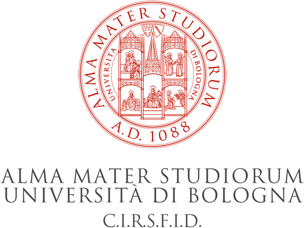
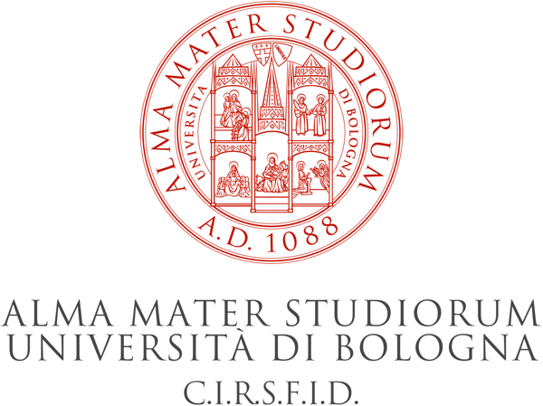

JURIX 2018
The 31st International Conference on Legal Knowledge and Information Systems
December 12–14, 2018 in Groningen, The Netherlands
The conference is held in Het Kasteel.
The 31st International Conference on Legal Knowledge and Information Systems
December 12–14, 2018 in Groningen, The Netherlands
The conference is held in Het Kasteel.
JURIX 2018 is the 31st international conference on Legal Knowledge and Information Systems, hosted by the Faculty of Law and the department of Artificial Intelligence in the Bernoulli Institute of Mathematics, Computer Science and Artificial Intelligence, Faculty of Science and Engineering of the University of Groningen. JURIX is the annual international conference on Legal Knowledge and Information Systems, organised by the Foundation for Legal Knowledge Based Systems (JURIX) since 1988. JURIX 2018 is organised in cooperation with the Dutch Research School for Information and Knowledge Systems (SIKS).
JURIX 2018 is held in Het Kasteel, Melkweg 1, Groningen, The Netherlands, on Wednesday December 12 till Friday December 14, 2018.
The proceedings are available at our publisher IOS Press.
Registration is open.
The list of accepted papers is available.
The list of workshops is available. The hackathon has been canceled.
Invited speakers at the main conference are Marie-Francine Moens, KU Leuven, and Jeroen van den Hoven, Delft University of Technology.
The calls are published. The deadline for research paper submission is Sunday, September 16, 2018.
 
